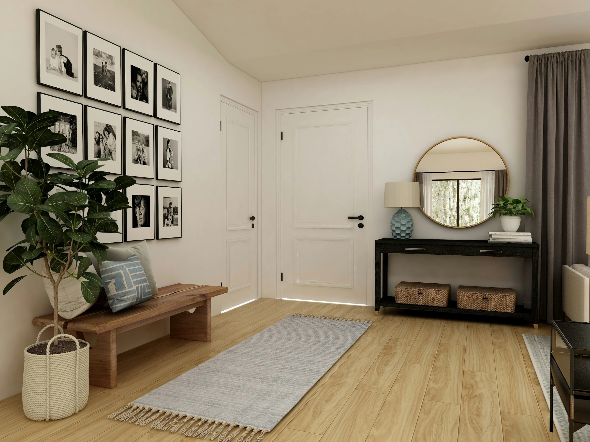
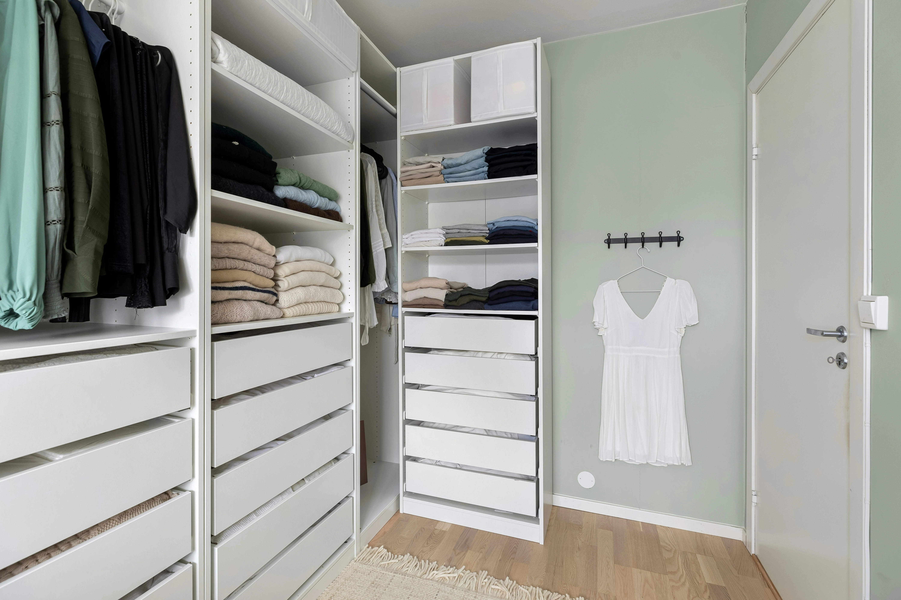

A place for everything, making space for you.
A space should support the life or work happening within it. When it is not functioning well, everyday life can feel more stressful and more demanding than it needs to. Through practical, considered support, that space can become simpler to use, easier to manage, and better suited to how you live or work.

Services
Professional decluttering and organising support for homes and small businesses, shaped around your space, your routines, and what will make everyday life easier over time.
Support is always tailored rather than one-size-fits-all. This may include decluttering and supported decision-making, practical organising systems, storage planning, paperwork or digital organisation, and follow-up support where needed.
Whether you need help with one area or several, the aim is to create spaces that function more smoothly, feel less overwhelming, and are easier to live with and maintain over time.
View Services

How It Works
Every project follows a clear process, while still being shaped around your space, your priorities, and the pace that feels realistic for you.
After your initial enquiry, the process begins with a short form and discovery call, followed by an assessment to understand the space in more detail and recommend the most appropriate way forward. From there, support is planned in manageable stages, so progress feels steady and expectations remain well defined throughout.
View the ProcessEnquiry
A short form and discovery call help clarify the space, the support needed, and the right next step.
Assessment
An assessment helps define priorities, understand the space in context, and recommend the most suitable way forward.
Planned Sessions
Support is then delivered in realistic stages, with clear expectations and a pace that feels manageable.
About
I’m Rose, founder of Where Things Belong. I believe decluttering and organising work best when they are approached with care, attentiveness, and a real understanding of both the space and the people using it.
My approach is considered, practical, and highly tailored. I help clients make decisions at a pace that feels manageable, see new possibilities in the way a space can function, and create systems that work for real life rather than following a one-size-fits-all idea of how things should be done.
About RoseClient Experiences
I had the best experience with Rose. I didn’t really know what to expect going into this, but it actually ended up being so much fun. She made me feel at ease throughout the whole process and made sure she had a clear picture of what I wanted to achieve before we got started. I felt included in every decision along the way. Seeing the end result was overwhelming, but in the best possible way.
— Victoria, Lincoln
It’s been such a relief having Rose help me organise various spaces in my home. I was taken out of my comfort zone a couple of times, but it was so worth it. Life feels much easier now. Thank you, Rose.
— Sharon, Wakefield
Rose has great storage ideas. She made the sorting and organising of my clutter, so easy. I feel I'm able to breathe in my own bedroom again, there's so much space!
— Hannah, Hebden Bridge